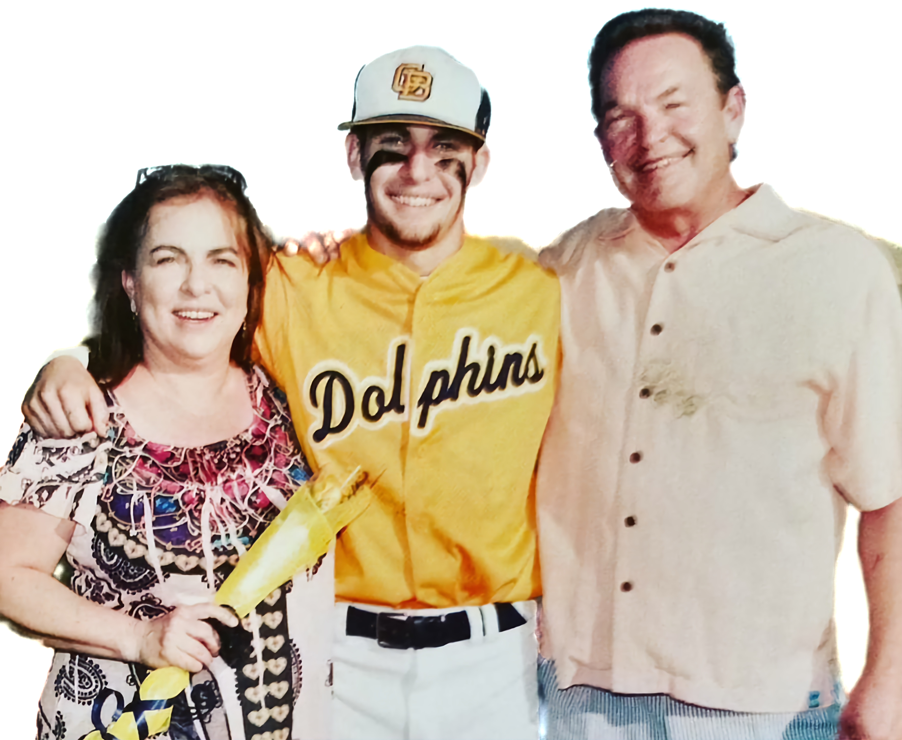

Overview
With more than eight years in enterprise SaaS, cloud, and AI-driven data platforms, I’ve focused my career on transforming complex technologies into business outcomes that matter. I currently serve as Solution Sales Manager for Navagis, a Premier Google Maps Partner, leading go-to-market alignment with Google Cloud teams across North America.
Before Navagis, I scaled channel and CSP growth at ISI Analytics — achieving 132% quota attainment across eight consecutive quarters. Earlier, I founded and exited Parlayking LTD, a SaaS analytics startup built on Bayesian models for predictive compensation analysis — a project that combined my love of data, problem-solving, and real-world application.
Approach & Philosophy
Growth isn’t about chasing numbers — it’s about alignment. I focus on clarity, collaboration, and measurable outcomes that move the needle. My work blends analytical rigor with authentic relationships, building repeatable frameworks that scale across teams, partners, and customers. Whether I’m designing a co-sell motion with Google Cloud or guiding a client through AI adoption, I aim to create compounding impact.
Beyond Work
Before business, there was baseball. I played collegiate ball after an All-State high school career — years that taught me discipline, grit, and the power of repetition. That athlete’s mindset still drives how I think and lead today.
Outside of work, I’m fascinated by how data reveals patterns in performance. I spend time coding in Python — building models and visualizations for sports analytics and betting strategy. It’s part curiosity, part creative outlet — and all about learning how systems behave under pressure.
When I’m not working or tinkering with code, I’m probably golfing, fishing along the Gulf Coast, or hanging out with my dog. Those moments keep me grounded and remind me that balance is a form of strategy, too.
Currently Focused On
- Expanding Google Cloud & Maps ecosystem growth through partner innovation
- Designing AI-driven enablement frameworks that align sales, product, and marketing teams
- Developing data visualization dashboards for analytics-driven storytelling
- Exploring intersections of geospatial, sports, and predictive analytics